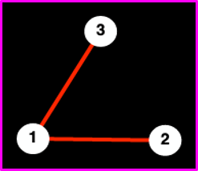

Jonathan Crofts
Nottingham Trent University
An important network representation is that of the graph Laplacian, which is defined as
\[ L = D-A \]where $D = \mathrm{diag}(k_1, k_2, \ldots, k_n)$ is the diagonal matrix of degrees
This matrix has many applications in network science the two main of which are
The graph Laplacian has the following important properties:
For every vector $\mathbf{x}\in\mathbb{R}^n$ we have
$L$ is symmetric and positive definite
The smallest eigenvalue of $L$ is zero and the corresponding eigenvector is the vector of all ones $\begin{pmatrix}1, 1,\ldots, 1\end{pmatrix}^T$
The multiplicity of the 0 eigenvalue equals the number of connected components in the network
Let us prove properties 1 and 3.
Firstly note that
\[ L\begin{pmatrix}1\\1\\\vdots\\1\end{pmatrix} = D\begin{pmatrix}1\\1\\\vdots\\1\end{pmatrix} -A\begin{pmatrix}1\\1\\\vdots\\1\end{pmatrix} = \begin{pmatrix}k_1\\k_2\\\vdots\\k_n\end{pmatrix}- \begin{pmatrix}k_1\\k_2\\\vdots\\k_n\end{pmatrix} = 0\cdot \begin{pmatrix}1\\1\\\vdots\\1\end{pmatrix} \]To prove zero is the smallest eigenvalue we need the so-called oriented incidence matrix which is the $n\times m$ matrix such that
\[ B_{i_1,j}=1 \qquad\text{and}\qquad B_{i_2,j}=-1 \]if nodes $v_{i_1}$ and $v_{i_2}$ are connected and zero everywhere else
For example we have that the incidence matrix of the toy network shown here is
\[ B = \begin{pmatrix}1&1\\-1&0\\0&-1\end{pmatrix} \]Note that the columns denote edges and sum to zero
Importantly it can be shown that the Laplacian matrix can be written in terms of the oriented incidence matrix
To see this, note that
\[ \left(BB^T\right)_{ij} = \sum_k B_{ik}B^T_{kj} \] Now if $i$ and $j$ differ then either
\[ \sum_k B_{ik}B_{jk} = 0 \]or
\[ \sum_k B_{ik}B_{jk} = -1 \qquad(i\sim j) \]i.e. the dot product of any two rows of $B$ is either 0 or 1
For $i=j$ we count the number of edges incident to a node so that
\[ \sum_k B_{ik}B_{jk} = k_i \]To summarise
\[ \left(BB^T\right)_{ij} = L_{ij} = \begin{cases} -1&i\sim j\\ k_i&i=j\\0&\text{ otherwise.}\end{cases} \]i.e. the graph Laplacian
Now suppose that $\mathbf{v}_i$ is an eigenvetor of $L$ with eigenvalue $\lambda_i$
Then
\[ \begin{align*} 0\leq ||B^T\mathbf{v}_i||^2&=\mathbf{v}_i^TBB^T\mathbf{v}_i\\ &=\mathbf{v}_i^TL\mathbf{v}_i\\ &= \lambda_i\mathbf{v}_i^T\mathbf{v}= \lambda_i \end{align*} \]Since $L$ always has at least one eigenvalue equal to zero the result follows
The network above shows a network that consists of three modules
We would like to have an automated way of determining modules in a network
This is a difficult problem and a current area of research in network science
There would appear to be two communities (or modules) in the network example
This partition can be clearly seen by plotting the sorted eigenvector
In our example the division into two sets
\[ V_1 = \{3,4,5,6,7,8\} ~\text{ and }~ V_2 =\{1,2,9,10,11,12\} \]Note that determining communities or modules in biological networks is an important challenge